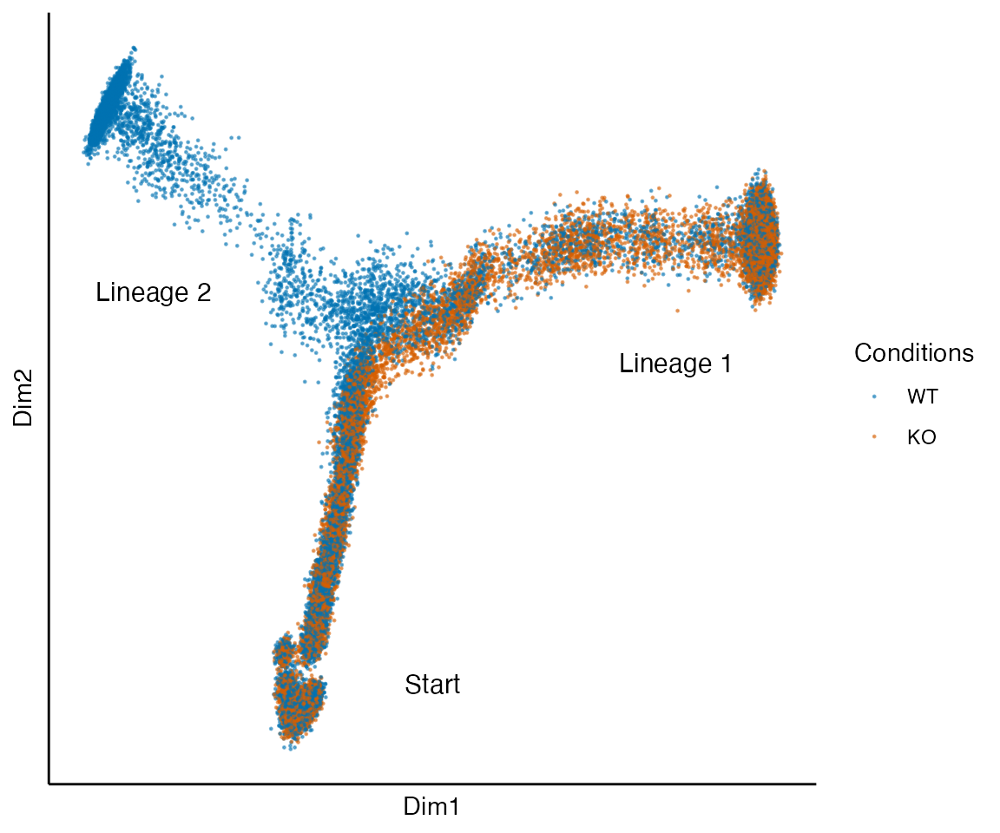
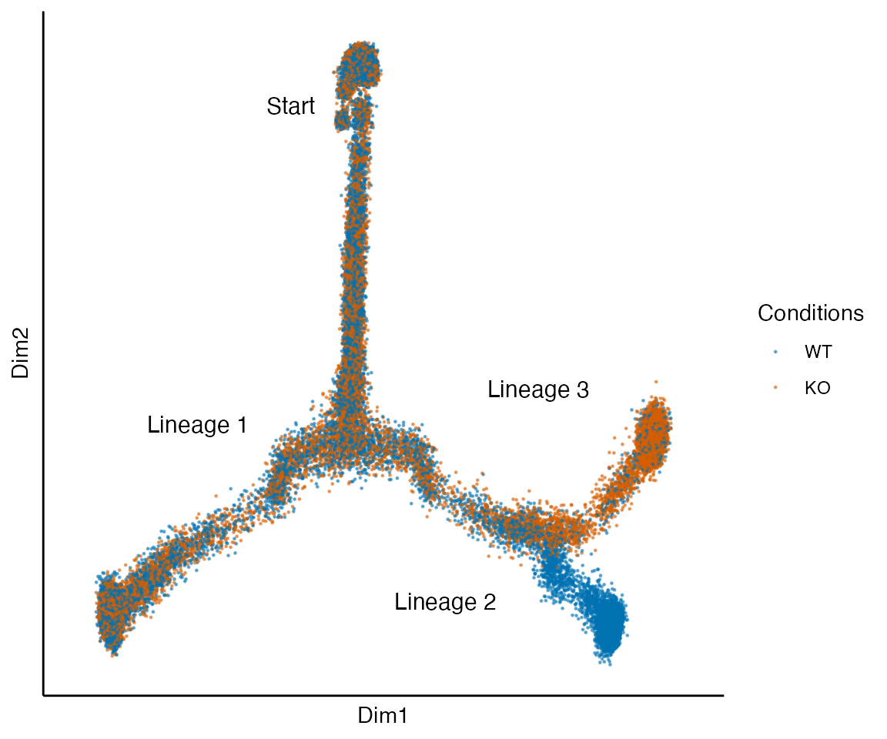

Running and analyzing the simulations
Hector Roux de Bézieux
Simulations.Rmd
libs <- c("here", "dplyr", "stringr", "tidyr", "SingleCellExperiment", "slingshot",
"condiments", "cowplot", "dyngen", "ggplot2", "condimentsPaper", "ggraph")
suppressMessages(
suppressWarnings(sapply(libs, require, character.only = TRUE))
)## here dplyr stringr
## TRUE TRUE TRUE
## tidyr SingleCellExperiment slingshot
## TRUE TRUE TRUE
## condiments cowplot dyngen
## TRUE TRUE TRUE
## ggplot2 condimentsPaper ggraph
## TRUE TRUE TRUE
rm(libs)
theme_set(theme_classic())The simulations are based on the dyngen package(Cannoodt et al. 2020).
Running the simulations
This can be very long, we recommand running this in a separate script. None of the code in this section is run while compiling the vignettes.
Setting the parameters
library(BiocParallel)
set.seed(97174)
options(Ncpus = 16L)
nCores <- 16
ratio <- c(.5, .8, .9, .95)
n_boot_real <- 50
frac_real <- .1
n_boot_null <- 100
frac_null <- .05
sub_sample <- function(sce, frac) {
df <- colData(sce) %>% as.data.frame() %>%
mutate(id = as.numeric(rownames(.))) %>%
group_by(condition) %>%
sample_frac(frac)
return(sce[, df$id])
}Bifurcating trajectory with two conditions
res <- list()
for (multiplier in c(ratio, round(1 / ratio, 2)[4:1])) {
sce <- create_bifurcating_simu(multiplier = multiplier)
if (multiplier == .5) fork_sce <- sce
set.seed(2019)
res_loc <- mclapply(seq_len(n_boot_real), function(b, frac) {
return(anayze_all(sub_sample(sce, frac = frac)))
}, frac = frac_real, mc.cores = nCores)
worked <- lapply(res_loc, function(res){
return(!"SingleCellExperiment" %in% class(res))
}) %>% unlist()
res_loc <- res_loc[worked]
res[[as.character(multiplier)]] <- bind_rows(res_loc)
}
real <- bind_rows(res, .id = "multiplier") %>%
clean_results()
sce <- create_bifurcating_simu(multiplier = 1, nSim = 400)
set.seed(2019)
res_loc <- mclapply(seq_len(n_boot_null), function(b, frac) {
return(anayze_all(sub_sample(sce, frac = frac)))
}, frac = frac_null, mc.cores = nCores)
worked <- lapply(res_loc, function(res){
return(!"SingleCellExperiment" %in% class(res))
}) %>% unlist()
res_loc <- res_loc[worked]
null <- bind_rows(res_loc) %>%
mutate(multiplier = 1) %>%
clean_results()
fork <- bind_rows("Real" = real, "Null" = null, .id = "Type") %>%
arrange(multiplier)Two bifurcations and two conditions
res <- list()
for (multiplier in c(ratio, round(1 / ratio, 2)[4:1])) {
sce <- create_consecutive_bifurcating_simu(multiplier = multiplier)
if (multiplier == .5) tree_sce <- sce
set.seed(2019)
res_loc <- mclapply(seq_len(n_boot_real), function(b, frac) {
return(anayze_all(sub_sample(sce, frac = frac), shape = 3))
}, frac = frac_real, mc.cores = nCores)
worked <- lapply(res_loc, class) %>% unlist()
worked <- worked == "data.frame"
res_loc <- res_loc[worked]
res[[as.character(multiplier)]] <- bind_rows(res_loc)
}
real <- bind_rows(res, .id = "multiplier") %>%
clean_results()
sce <- create_consecutive_bifurcating_simu(multiplier = 1, nSim = 400)
set.seed(2019)
res_loc <- mclapply(seq_len(n_boot_null), function(b, frac) {
return(anayze_all(sub_sample(sce, frac = frac), shape = 3))
}, frac = frac_null, mc.cores = nCores)
worked <- lapply(res_loc, class) %>% unlist()
worked <- worked == "data.frame"
res_loc <- res_loc[worked]
null <- bind_rows(res_loc) %>%
mutate(multiplier = 1) %>%
clean_results()
tree <- bind_rows("Real" = real, "Null" = null, .id = "Type") %>%
arrange(multiplier)Bifurcating trajectory with three conditions
res <- list()
for (multiplier in ratio) {
sce <- create_bifurcating_three_conditions_simu(multiplier = multiplier)
if (multiplier == .5) complex_sce <- sce
set.seed(2019)
res_loc <- mclapply(seq_len(n_boot_real), function(b, frac) {
return(anayze_multiple_conditions(sub_sample(sce, frac = frac)))
}, frac = frac_real, mc.cores = nCores)
worked <- lapply(res_loc, function(res){
return(!"SingleCellExperiment" %in% class(res))
}) %>% unlist()
res_loc <- res_loc[worked]
res[[as.character(multiplier)]] <- bind_rows(res_loc)
}
real <- bind_rows(res, .id = "multiplier") %>%
clean_results()
sce <- create_bifurcating_three_conditions_simu(multiplier = 1, nSim = 400)
set.seed(2019)
res_loc <- mclapply(seq_len(n_boot_null), function(b, frac) {
return(anayze_multiple_conditions(sub_sample(sce, frac = frac)))
}, frac = frac_null, mc.cores = nCores)
worked <- lapply(res_loc, function(res){
return(!"SingleCellExperiment" %in% class(res))
}) %>% unlist()
res_loc <- res_loc[worked]
null <- bind_rows(res_loc) %>%
mutate(multiplier = 1) %>%
clean_results()
complex <- bind_rows("Real" = real, "Null" = null, .id = "Type") %>%
arrange(multiplier)Trajectory with five lineages and two conditions
ratio <- c(.1, .2, .3, .5, 2, 3, 5, 10)
res <- list()
for (multiplier in ratio) {
sce <- create_5_lineages_simu(multiplier = multiplier)
if (multiplier == .5) complex_sce <- sce
set.seed(2019)
res_loc <- mclapply(seq_len(n_boot_real), function(b, frac) {
return(anayze_multiple_conditions(sub_sample(sce, frac = frac)))
}, frac = frac_real, mc.cores = nCores)
worked <- lapply(res_loc, function(res){
return(!"SingleCellExperiment" %in% class(res))
}) %>% unlist()
res_loc <- res_loc[worked]
res[[as.character(multiplier)]] <- bind_rows(res_loc)
}
real <- bind_rows(res, .id = "multiplier") %>%
clean_results()
sce <- create_5_lineages_simu(multiplier = 1, nSim = 400)
set.seed(2019)
res_loc <- mclapply(seq_len(n_boot_null), function(b, frac) {
return(anayze_multiple_conditions(sub_sample(sce, frac = frac)))
}, frac = frac_null, mc.cores = nCores)
worked <- lapply(res_loc, function(res){
return(!"SingleCellExperiment" %in% class(res))
}) %>% unlist()
res_loc <- res_loc[worked]
null <- bind_rows(res_loc) %>%
mutate(multiplier = 1) %>%
clean_results()
five_lins <- bind_rows("Real" = real, "Null" = null, .id = "Type") %>%
arrange(multiplier)Wrong step 1 outcome
ratio <- c(.9, .95)
res <- list()
for (multiplier in c(ratio, round(1 / ratio, 2)[2:1])) {
sce <- create_bifurcating_simu(multiplier = multiplier)
set.seed(2020)
res_loc <- mclapply(seq_len(n_boot_real), function(b, frac) {
return(anayze_all_per_cond(sub_sample(sce, frac = frac)))
}, frac = frac_real, mc.cores = nCores)
worked <- lapply(res_loc, class) %>% unlist()
worked <- worked == "data.frame"
res_loc <- res_loc[worked]
res[[as.character(multiplier)]] <- bind_rows(res_loc)
}
real <- bind_rows(res, .id = "multiplier")
sce <- create_consecutive_bifurcating_simu(multiplier = 1, nSim = 400)
set.seed(2019)
null <- mclapply(seq_len(n_boot_null), function(b, frac) {
return(anayze_all_per_cond(sub_sample(sce, frac = frac)))
}, frac = frac_null, mc.cores = nCores) %>%
bind_rows()
step1_fail <- bind_rows("Real" = real, "Null" = null, .id = "Type") %>%
arrange(multiplier) %>%
mutate(X = X - 1, group = X - X %% 5) %>%
select(-X) %>%
mutate(multiplier = as.numeric(multiplier))Unstability
add_noise_to_sce <- function(sce, noise_pst = .1, noise_wgt = .1) {
pseudotime <- matrix(sce$sim_time, ncol = 2,
nrow = ncol(sce), byrow = FALSE)
weights <- matrix(c(sce$from %in% c("sA", "sB", "sBmid", "sC"),
sce$from %in% c("sA", "sB", "sBmid", "sD")),
nrow = ncol(sce), byrow = FALSE)
normWeights <- sweep(weights, 1,
FUN = "/",
STATS = apply(weights, 1, sum))
pseudotime <- pseudotime * matrix(rnorm(2 * ncol(sce), mean = 1, sd = noise_pst), ncol = 2)
normWeights <- apply(normWeights, 1, function(row) {
switch <- rbinom(1, 1, noise_wgt)
if (switch) {
return(1 - row)
} else {
return(row)
}
})
return(list("pseudotime" = pseudotime,
"cellWeights" = t(normWeights)))
}
set.seed(20876)
sce <- create_bifurcating_simu(multiplier = .85)
i <- 1
res <- list()
for (noise_pst in c(0:40 / 10)) {
for (noise_wgt in c(0:5 / 10)) {
for (j in 1:100) {
print(i)
estimates <- add_noise_to_sce(sce, noise_pst, noise_wgt)
res_noise <- progressionTest(pseudotime = estimates$pseudotime,
cellWeights = estimates$cellWeights,
conditions = sce$condition,
thresh = .01) %>%
select(-lineage)
res_noise$noise_pst <- noise_pst
res_noise$noise_wgt <- noise_wgt
res[[i]] <- res_noise
i <- i + 1
}
}
}
unstability <- bind_rows(res)Exploring the simulations
Low dimension representation
data("fork_sce", package = "condimentsPaper")
plot_reduced_dim_together(fork_sce) +
annotate("text", x = 0, y = -.4, label = "Start", size = 4) +
annotate("text", x = .35, y = .05, label = "Lineage 1", size = 4) +
annotate("text", x = -.4, y = .15, label = "Lineage 2", size = 4)
data("tree_sce", package = "condimentsPaper")
plot_reduced_dim_together(tree_sce) +
annotate("text", x = -.15, y = .35, label = "Start", size = 4) +
annotate("text", x = -.3, y = -.1, label = "Lineage 1", size = 4) +
annotate("text", x = .1, y = -.35, label = "Lineage 2", size = 4) +
annotate("text", x = .25, y = -.05, label = "Lineage 3", size = 4)
data("complex_sce", package = "condimentsPaper")
plot_reduced_dim_together(complex_sce) +
annotate("text", x = -.15, y = -.3, label = "Start", size = 4) +
annotate("text", x = .3, y = .2, label = "Lineage 1", size = 4) +
annotate("text", x = -.35, y = .2, label = "Lineage 2", size = 4)
data("fivelin_sce", package = "condimentsPaper")
plot_reduced_dim_together(fivelin_sce) +
annotate("text", x = 0, y = -.1, label = "Start", size = 4) +
annotate("text", x = .3, y = .15, label = "Lineage 1", size = 4, angle = 30) +
annotate("text", x = .2, y = .3, label = "Lineage 2", size = 4, angle = 30) +
annotate("text", x = -.3, y = .05, label = "Lineage 3", size = 4) +
annotate("text", x = -.15, y = .3, label = "Lineage 4", size = 4) +
annotate("text", x = 0, y = -.35, label = "Lineage 5", size = 4)Network branching
Two lineages
set.seed(0989021)
backbone <- backbone_bifurcating()
model_common <-
initialise_model(
backbone = backbone,
num_cells = 100,
num_tfs = nrow(backbone$module_info),
num_targets = 250,
num_hks = 250,
simulation_params = simulation_default(
census_interval = 10,
ssa_algorithm = ssa_etl(tau = 300 / 3600),
experiment_params = simulation_type_wild_type(num_simulations = 100)
)
) %>%
generate_tf_network()## Generating TF network
set.seed(298)
net <- plot_backbone_modulenet_simplify(model_common) +
guides(col = FALSE, edge_width = FALSE) +
ggraph::scale_edge_width_continuous(range = c(.5, .5)) +
theme(plot.background = element_blank()) ## Scale for 'edge_width' is already present. Adding another scale for
## 'edge_width', which will replace the existing scale.
net <- ggdraw() +
draw_plot(net, 0, 0, scale = 1.2)
net
Three lineages
set.seed(1082)
backbone <- backbone_consecutive_bifurcating()
model_common <-
initialise_model(
backbone = backbone,
num_cells = 100,
num_tfs = nrow(backbone$module_info),
num_targets = 250,
num_hks = 250,
simulation_params = simulation_default(
census_interval = 10,
ssa_algorithm = ssa_etl(tau = 300 / 3600),
experiment_params = simulation_type_wild_type(num_simulations = 100)
)
) %>%
generate_tf_network()## Generating TF network
set.seed(2)
net2 <- plot_backbone_modulenet_simplify(model_common) +
guides(col = FALSE, edge_width = FALSE) +
ggraph::scale_edge_width_continuous(range = c(.5, .5)) +
theme(plot.background = element_blank()) ## Scale for 'edge_width' is already present. Adding another scale for
## 'edge_width', which will replace the existing scale.
net2 <- ggdraw() +
draw_plot(net2, 0, 0, scale = 1.2)
net2
Five lineages
set.seed(15)
bblego_list <- list(
bblego_start("A", type = "simple", num_modules = 2),
bblego_linear("A", to = "B", num_modules = 2),
bblego_branching("B", c("C", "D", "E")),
bblego_branching("C", c("F", "G")),
bblego_branching("E", c("H", "I")),
bblego_end("D", num_modules = 4),
bblego_end("F", num_modules = 4), bblego_end("G", num_modules = 4),
bblego_end("H", num_modules = 6), bblego_end("I", num_modules = 6)
)
backbone <- bblego(.list = bblego_list)
model_common <-
initialise_model(
backbone = backbone,
num_cells = 100,
num_tfs = nrow(backbone$module_info),
num_targets = 250,
num_hks = 250,
simulation_params = simulation_default(
census_interval = 10,
ssa_algorithm = ssa_etl(tau = 300 / 3600),
experiment_params = simulation_type_wild_type(num_simulations = 100)
)
) %>%
generate_tf_network()## Generating TF network
set.seed(14)
net3 <- plot_backbone_modulenet_simplify(model_common) +
guides(col = FALSE, edge_width = FALSE) +
scale_edge_width_continuous(range = c(.5, .5)) +
theme(plot.background = element_blank()) ## Scale for 'edge_width' is already present. Adding another scale for
## 'edge_width', which will replace the existing scale.
net3 <- ggdraw() +
draw_plot(net3, 0, 0, scale = 1.2)
net3Analyzing the simulations
data("fork", package = "condimentsPaper")
data("tree", package = "condimentsPaper")
data("complex", package = "condimentsPaper")
data("five_lins", package = "condimentsPaper")Comparison of methods
df <- lapply(
list("fork" = fork, "tree" = tree, "complex" = complex, "5lin" = five_lins),
all_metrics, cutoff = .05) %>%
bind_rows(.id = "dataset") %>%
mutate(value = round(value, 2)) %>%
mutate(metric = factor(metric, levels = c("TNR", "PPV", "TPR", "NPV", "F1")),
dataset = case_when(
dataset == "fork" ~ "a)",
dataset == "tree" ~ "b)",
dataset == "complex" ~ "c)",
dataset == "5lin" ~ "d)"
),
dataset = factor(dataset, levels = c("a)", "b)", "c)", "d)"))) %>%
arrange(dataset, metric) %>%
mutate(test_type = factor(test_type,
levels = c("condiments_sling_prog", "condiments_mon_prog",
"condiments_sling_diff", "DAseq", "milo")),
label = if_else(is.na(value), "NA", as.character(value)))## Joining, by = "test_type"
## Joining, by = "test_type"
## Joining, by = "test_type"
## Joining, by = "test_type"
## Joining, by = "test_type"
table_plot <- function(df) {
p <- ggplot(df, aes(x = test_type, y = metric, label = label,
fill = as.numeric(label))) +
geom_tile() +
geom_text(na.rm = FALSE) +
scale_fill_viridis_c() +
scale_x_discrete(labels = c("progressionTest\n(Slingshot)", "progressionTest\n(Monocle)",
"fateSelectionTest\n(Slingshot)", "DAseq", "Milo")) +
labs(x = "", y = "", fill = "(Value - 1)\n") +
guides(fill = "none") +
facet_grid(dataset ~ ., switch = "y") +
theme(axis.text.x = element_text(size = 14, angle = -20, vjust = .2)) +
theme(legend.position = "right",
legend.title = element_text(size = 16),
legend.text = element_text(size = 14),
legend.background = element_blank(),
panel.spacing.y = unit(7, "pt"),
strip.text.y.left = element_text(angle = 0))
return(p)
}
table_plot(df)Wrong step 1 outcome
data("step1_fail", package = "condimentsPaper")
cutoffs <- c((2:9) * .001, (1:9) * .01, .1 * 1:10)
df <- step1_fail %>%
mutate(test_type = paste0(method, "_", test_type)) %>%
select(test_type, multiplier, p.value, Type) %>%
dplyr::rename("adjusted_p_value" = "p.value") %>%
lapply(cutoffs, all_metrics, df = .)## Joining, by = "test_type"
## Joining, by = "test_type"
## Joining, by = "test_type"
## Joining, by = "test_type"
## Joining, by = "test_type"
## Joining, by = "test_type"
## Joining, by = "test_type"
## Joining, by = "test_type"
## Joining, by = "test_type"
## Joining, by = "test_type"
## Joining, by = "test_type"
## Joining, by = "test_type"
## Joining, by = "test_type"
## Joining, by = "test_type"
## Joining, by = "test_type"
## Joining, by = "test_type"
## Joining, by = "test_type"
## Joining, by = "test_type"
## Joining, by = "test_type"
## Joining, by = "test_type"
## Joining, by = "test_type"
## Joining, by = "test_type"
## Joining, by = "test_type"
## Joining, by = "test_type"
## Joining, by = "test_type"
## Joining, by = "test_type"
## Joining, by = "test_type"
## Joining, by = "test_type"
## Joining, by = "test_type"
## Joining, by = "test_type"
## Joining, by = "test_type"
## Joining, by = "test_type"
## Joining, by = "test_type"
## Joining, by = "test_type"
## Joining, by = "test_type"
## Joining, by = "test_type"
## Joining, by = "test_type"
## Joining, by = "test_type"
## Joining, by = "test_type"
## Joining, by = "test_type"
## Joining, by = "test_type"
## Joining, by = "test_type"
## Joining, by = "test_type"
## Joining, by = "test_type"
## Joining, by = "test_type"
## Joining, by = "test_type"
## Joining, by = "test_type"
## Joining, by = "test_type"
## Joining, by = "test_type"
## Joining, by = "test_type"
## Joining, by = "test_type"
## Joining, by = "test_type"
## Joining, by = "test_type"
## Joining, by = "test_type"
names(df) <- cutoffs
df <- bind_rows(df, .id = "cutoff") %>%
mutate(cutoff = as.numeric(cutoff)) %>%
select(cutoff, metric, value, test_type) %>%
pivot_wider(names_from = metric, values_from = value) %>%
filter(str_detect(test_type, "sling")) %>%
mutate(step1 = if_else(str_detect(test_type, "normal"),
"Fail to reject the null\n(Common trajectory)",
"Reject the null\n(Separate trajectory)"),
test_type = word(test_type, 3, sep = "_"),
test_type = if_else(test_type == "diff", "fateSelectionTest", "progressionTest"))
p <- ggplot(df, aes(x = 1 - PPV, y = TPR, col = step1)) +
geom_path() +
geom_point(size = 2) +
facet_wrap(~test_type, scales = "free_y") +
scale_color_brewer(palette = "Set1") +
labs(col = "Step 1 results:") +
theme_classic() +
theme(legend.position = "bottom")
pUnstability
data("unstability", package = "condimentsPaper")
df <- unstability %>%
group_by(noise_pst, noise_wgt) %>%
summarise(p.value = median(p.value))## `summarise()` has grouped output by 'noise_pst'. You can override using the `.groups` argument.
p <- ggplot(df, aes(x = noise_pst, y = p.value)) +
geom_point(aes(col = as.character(noise_wgt))) +
labs(x = "Noise on Pseudotime", y = "p value",
col = "Noise on\nbranch assignement")
legend <- get_legend(p + theme(legend.position = "bottom"))
p <- p + guides(col = FALSE, fill = FALSE)
plot_grid(plot_grid(p, p + scale_y_log10(), ncol = 2, scale = .95),
legend, rel_heights = c(10, 1), nrow = 2)
Special look at three condition situation
ggplot(complex, aes(x = as.numeric(factor(multiplier, levels = unique(multiplier))),
y = adjusted_p_value)) +
geom_boxplot(aes(group = interaction(test_type, multiplier),
fill = test_type)) +
geom_hline(yintercept = .05) +
scale_x_continuous(labels = unique(complex$multiplier),
breaks = 1:5) +
scale_color_brewer(palette = "Pastel2") +
scale_fill_brewer(palette = "Pastel2") +
labs(x = "Effect Size: Multiplier on the master regulator",
y = "adjusted p-value", col = "Test", fill = "Test") +
theme(legend.position = "bottom")Session Info
## R version 4.1.0 (2021-05-18)
## Platform: x86_64-apple-darwin17.0 (64-bit)
## Running under: macOS Big Sur 10.16
##
## Matrix products: default
## BLAS: /Library/Frameworks/R.framework/Versions/4.1/Resources/lib/libRblas.dylib
## LAPACK: /Library/Frameworks/R.framework/Versions/4.1/Resources/lib/libRlapack.dylib
##
## locale:
## [1] en_US.UTF-8/en_US.UTF-8/en_US.UTF-8/C/en_US.UTF-8/en_US.UTF-8
##
## attached base packages:
## [1] parallel stats4 stats graphics grDevices utils datasets
## [8] methods base
##
## other attached packages:
## [1] ggraph_2.0.5 condimentsPaper_1.0
## [3] ggplot2_3.3.5 dyngen_1.0.2
## [5] cowplot_1.1.1 condiments_1.1.04
## [7] slingshot_2.1.1 TrajectoryUtils_1.0.0
## [9] princurve_2.1.6 SingleCellExperiment_1.14.1
## [11] SummarizedExperiment_1.22.0 Biobase_2.52.0
## [13] GenomicRanges_1.44.0 GenomeInfoDb_1.28.2
## [15] IRanges_2.26.0 S4Vectors_0.30.0
## [17] BiocGenerics_0.38.0 MatrixGenerics_1.4.3
## [19] matrixStats_0.60.1 tidyr_1.1.3
## [21] stringr_1.4.0 dplyr_1.0.7
## [23] here_1.0.1 knitr_1.33
##
## loaded via a namespace (and not attached):
## [1] scattermore_0.7 ModelMetrics_1.2.2.2
## [3] R.methodsS3_1.8.1 Ecume_0.9.1
## [5] SeuratObject_4.0.2 ragg_1.1.3
## [7] irlba_2.3.3 DelayedArray_0.18.0
## [9] R.utils_2.10.1 data.table_1.14.0
## [11] rpart_4.1-15 flowCore_2.4.0
## [13] GEOquery_2.60.0 RCurl_1.98-1.4
## [15] generics_0.1.0 ScaledMatrix_1.0.0
## [17] GillespieSSA2_0.2.8 miloR_1.0.0
## [19] RANN_2.6.1 RcppXPtrUtils_0.1.1
## [21] proxy_0.4-26 future_1.21.0
## [23] tzdb_0.1.2 xml2_1.3.2
## [25] spatstat.data_2.1-0 lubridate_1.7.10
## [27] httpuv_1.6.1 assertthat_0.2.1
## [29] viridis_0.6.1 gower_0.2.2
## [31] xfun_0.24 hms_1.1.0
## [33] jquerylib_0.1.4 evaluate_0.14
## [35] promises_1.2.0.1 fansi_0.5.0
## [37] igraph_1.2.6 DBI_1.1.1
## [39] htmlwidgets_1.5.3 spatstat.geom_2.2-2
## [41] purrr_0.3.4 ellipsis_0.3.2
## [43] cytolib_2.4.0 RcppParallel_5.1.4
## [45] deldir_0.2-10 sparseMatrixStats_1.4.0
## [47] vctrs_0.3.8 remotes_2.4.0
## [49] ROCR_1.0-11 abind_1.4-5
## [51] caret_6.0-88 cachem_1.0.5
## [53] withr_2.4.2 ggforce_0.3.3
## [55] sctransform_0.3.2 goftest_1.2-2
## [57] cluster_2.1.2 lazyeval_0.2.2
## [59] crayon_1.4.1 labeling_0.4.2
## [61] glmnet_4.1-2 edgeR_3.34.0
## [63] recipes_0.1.16 pkgconfig_2.0.3
## [65] tweenr_1.0.2 vipor_0.4.5
## [67] nlme_3.1-152 transport_0.12-2
## [69] nnet_7.3-16 rlang_0.4.11
## [71] globals_0.14.0 lifecycle_1.0.0
## [73] miniUI_0.1.1.1 rsvd_1.0.5
## [75] rprojroot_2.0.2 polyclip_1.10-0
## [77] lmtest_0.9-38 Matrix_1.3-4
## [79] Rhdf5lib_1.14.2 zoo_1.8-9
## [81] beeswarm_0.4.0 ggridges_0.5.3
## [83] png_0.1-7 viridisLite_0.4.0
## [85] bitops_1.0-7 R.oo_1.24.0
## [87] KernSmooth_2.23-20 rhdf5filters_1.4.0
## [89] pROC_1.17.0.1 DelayedMatrixStats_1.14.0
## [91] shape_1.4.6 parallelly_1.27.0
## [93] readr_2.0.0 beachmat_2.8.0
## [95] scales_1.1.1 memoise_2.0.0
## [97] magrittr_2.0.1 plyr_1.8.6
## [99] ica_1.0-2 zlibbioc_1.38.0
## [101] compiler_4.1.0 dqrng_0.3.0
## [103] RColorBrewer_1.1-2 fitdistrplus_1.1-5
## [105] XVector_0.32.0 listenv_0.8.0
## [107] patchwork_1.1.1 pbapply_1.4-3
## [109] MASS_7.3-54 mgcv_1.8-36
## [111] tidyselect_1.1.1 RProtoBufLib_2.4.0
## [113] stringi_1.7.3 textshaping_0.3.5
## [115] highr_0.9 yaml_2.2.1
## [117] BiocSingular_1.8.1 locfit_1.5-9.4
## [119] ggrepel_0.9.1 grid_4.1.0
## [121] sass_0.4.0 spatstat.linnet_2.3-0
## [123] tools_4.1.0 future.apply_1.7.0
## [125] foreach_1.5.1 gridExtra_2.3
## [127] prodlim_2019.11.13 farver_2.1.0
## [129] Rtsne_0.15 DropletUtils_1.12.1
## [131] proxyC_0.2.0 digest_0.6.27
## [133] monocle3_1.0.0 shiny_1.6.0
## [135] lava_1.6.9 Rcpp_1.0.7
## [137] DAseq_1.0.0 scuttle_1.2.0
## [139] later_1.2.0 RcppAnnoy_0.0.18
## [141] httr_1.4.2 kernlab_0.9-29
## [143] colorspace_2.0-2 fs_1.5.0
## [145] tensor_1.5 reticulate_1.20
## [147] splines_4.1.0 uwot_0.1.10
## [149] lmds_0.1.0 spatstat.utils_2.2-0
## [151] pkgdown_1.6.1 graphlayouts_0.7.1
## [153] plotly_4.9.4.1 systemfonts_1.0.2
## [155] xtable_1.8-4 jsonlite_1.7.2
## [157] spatstat_2.2-0 tidygraph_1.2.0
## [159] timeDate_3043.102 ipred_0.9-11
## [161] R6_2.5.1 cydar_1.16.0
## [163] pillar_1.6.2 htmltools_0.5.1.1
## [165] mime_0.11 glue_1.4.2
## [167] fastmap_1.1.0 BiocParallel_1.26.2
## [169] BiocNeighbors_1.10.0 class_7.3-19
## [171] codetools_0.2-18 utf8_1.2.2
## [173] lattice_0.20-44 bslib_0.2.5.1
## [175] spatstat.sparse_2.0-0 tibble_3.1.4
## [177] ggbeeswarm_0.6.0 leiden_0.3.8
## [179] gtools_3.9.2 zip_2.2.0
## [181] openxlsx_4.2.4 survival_3.2-11
## [183] limma_3.48.3 rmarkdown_2.9
## [185] desc_1.3.0 dynutils_1.0.6
## [187] munsell_0.5.0 e1071_1.7-7
## [189] rhdf5_2.36.0 GenomeInfoDbData_1.2.6
## [191] iterators_1.0.13 HDF5Array_1.20.0
## [193] reshape2_1.4.4 gtable_0.3.0
## [195] spatstat.core_2.3-0 Seurat_4.0.3References
Cannoodt, Robrecht, Wouter Saelens, Louise Deconinck, and Yvan Saeys. 2020. “Dyngen: A multi-modal simulator for spearheading new single-cell omics analyses.” bioRxiv, February, 2020.02.06.936971. https://doi.org/10.1101/2020.02.06.936971.